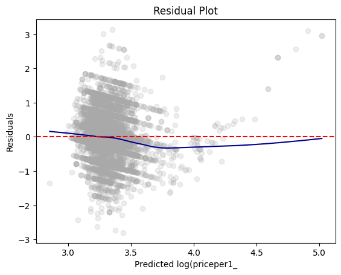

import pandas as pd
from pyspark.sql import SparkSession
from pyspark.sql.functions import rand, col, pow, mean, when, log
from pyspark.ml.feature import VectorAssembler
from pyspark.ml.regression import LinearRegressionBen & Jerry’s | Hw 2 Post
Building a linear regression model with PySpark and an ice cream dataset
Homework
PySpark
Linear Regression
Loading the Data and Preparing for PySpark
spark = SparkSession.builder.master("local[*]").getOrCreate()
ice_cream = pd.read_csv('https://bcdanl.github.io/data/ben-and-jerry-cleaned.csv')
def bool_to_int(df):
for i in df.columns:
if df[i].dtype == 'bool':
df[i] = df[i].astype('int')
else:
pass
bool_to_int(ice_cream)
ice_cream = ice_cream[~ice_cream['tvcable'].isna()]
ice_cream.describe()| priceper1 | household_id | household_income | household_size | usecoup | couponper1 | married | hispanic_origin | microwave | dishwasher | sfh | internet | |
|---|---|---|---|---|---|---|---|---|---|---|---|---|
| count | 21940.000000 | 2.194000e+04 | 21940.000000 | 21940.000000 | 21940.000000 | 21940.000000 | 21940.000000 | 21940.000000 | 21940.000000 | 21940.000000 | 21940.000000 | 21940.000000 |
| mean | 3.314440 | 1.661833e+07 | 125226.982680 | 2.456746 | 0.106746 | 0.125500 | 0.604239 | 0.047995 | 0.981632 | 0.773063 | 0.731860 | 0.843163 |
| std | 0.665394 | 1.168728e+07 | 57120.924532 | 1.335610 | 0.308797 | 0.517386 | 0.489025 | 0.213760 | 0.134282 | 0.418861 | 0.443001 | 0.363655 |
| min | 0.000000 | 2.000358e+06 | 40000.000000 | 1.000000 | 0.000000 | 0.000000 | 0.000000 | 0.000000 | 0.000000 | 0.000000 | 0.000000 | 0.000000 |
| 25% | 3.000000 | 8.143519e+06 | 80000.000000 | 2.000000 | 0.000000 | 0.000000 | 0.000000 | 0.000000 | 1.000000 | 1.000000 | 0.000000 | 1.000000 |
| 50% | 3.340000 | 8.401765e+06 | 110000.000000 | 2.000000 | 0.000000 | 0.000000 | 1.000000 | 0.000000 | 1.000000 | 1.000000 | 1.000000 | 1.000000 |
| 75% | 3.590000 | 3.018434e+07 | 170000.000000 | 3.000000 | 0.000000 | 0.000000 | 1.000000 | 0.000000 | 1.000000 | 1.000000 | 1.000000 | 1.000000 |
| max | 9.480000 | 3.044069e+07 | 310000.000000 | 9.000000 | 1.000000 | 8.980000 | 1.000000 | 1.000000 | 1.000000 | 1.000000 | 1.000000 | 1.000000 |
ice_cream = ice_cream[['household_income', 'household_size', 'couponper1', 'region', 'married', 'priceper1']]
vars_to_norm = ['household_income', 'household_size', 'couponper1']
def norm(df, cols):
for i in cols:
mean = df[i].mean()
std = df[i].std()
df[i] = (df[i] - mean) / std
norm(ice_cream, vars_to_norm)ice_cream.describe(include='all')| household_income | household_size | couponper1 | region | married | priceper1 | |
|---|---|---|---|---|---|---|
| count | 2.194000e+04 | 2.194000e+04 | 2.194000e+04 | 21940 | 21940.000000 | 21940.000000 |
| unique | NaN | NaN | NaN | 4 | NaN | NaN |
| top | NaN | NaN | NaN | South | NaN | NaN |
| freq | NaN | NaN | NaN | 6706 | NaN | NaN |
| mean | -7.643030e-17 | -1.023389e-16 | -4.793087e-17 | NaN | 0.604239 | 3.314440 |
| std | 1.000000e+00 | 1.000000e+00 | 1.000000e+00 | NaN | 0.489025 | 0.665394 |
| min | -1.492045e+00 | -1.090697e+00 | -2.425653e-01 | NaN | 0.000000 | 0.000000 |
| 25% | -7.917761e-01 | -3.419754e-01 | -2.425653e-01 | NaN | 0.000000 | 3.000000 |
| 50% | -2.665745e-01 | -3.419754e-01 | -2.425653e-01 | NaN | 1.000000 | 3.340000 |
| 75% | 7.838287e-01 | 4.067463e-01 | -2.425653e-01 | NaN | 1.000000 | 3.590000 |
| max | 3.234769e+00 | 4.899077e+00 | 1.711391e+01 | NaN | 1.000000 | 9.480000 |
ic = spark.createDataFrame(ice_cream)
ic.show()+--------------------+-------------------+-------------------+-------+-------+---------+
| household_income| household_size| couponper1| region|married|priceper1|
+--------------------+-------------------+-------------------+-------+-------+---------+
| 0.08355987510778587|-0.3419754294514314| 0.723830630783873|Central| 0| 3.41|
| 0.08355987510778587|-0.3419754294514314|-0.2425653069622484|Central| 0| 3.5|
| 0.08355987510778587|-0.3419754294514314|-0.2425653069622484|Central| 0| 3.5|
| -0.9668432913541072|-1.0906972059372513|-0.2425653069622484| West| 0| 3.0|
| 0.08355987510778587| 0.4067463470343886|-0.2425653069622484| South| 1| 3.99|
| 0.08355987510778587| 0.4067463470343886|-0.2425653069622484| South| 1| 3.89|
| 0.08355987510778587| 0.4067463470343886|-0.2425653069622484| South| 1| 3.89|
|-0.26657451371284513|-1.0906972059372513|-0.2425653069622484| East| 0| 2.14|
| 1.4840974303903098|-1.0906972059372513|-0.2425653069622484|Central| 0| 3.5|
| 1.4840974303903098|-1.0906972059372513| 2.1734245374030547|Central| 0| 3.0|
| 1.4840974303903098|-1.0906972059372513| 1.593586974755382|Central| 0| 4.0|
| -0.9668432913541072| 1.1554681235202087|-0.2425653069622484| South| 1| 2.99|
| -0.9668432913541072| 1.1554681235202087|-0.2425653069622484| South| 1| 2.5|
| -0.9668432913541072| 1.1554681235202087|-0.2425653069622484| South| 1| 2.27|
| -0.9668432913541072|-0.3419754294514314|-0.2425653069622484| East| 1| 2.55|
| -0.9668432913541072|-0.3419754294514314|-0.2425653069622484| East| 1| 2.56|
| 0.08355987510778587|-1.0906972059372513|-0.2425653069622484| East| 0| 3.19|
| 1.1339630415696789|-1.0906972059372513|-0.2425653069622484|Central| 0| 3.64|
|-0.26657451371284513|-0.3419754294514314|-0.2425653069622484|Central| 0| 6.0|
|-0.26657451371284513|-0.3419754294514314|-0.2425653069622484|Central| 0| 6.0|
+--------------------+-------------------+-------------------+-------+-------+---------+
only showing top 20 rows
Model Overview
The model will use marital status, coupon amount per unit, region, household income, and household size.
coupon amount per unit, household income, and household size are all mean normalized
marital status, and region will be one-hot encoded (marital status is single binary varible as it was boolean prior)
The label data to be predicted is price per unit
Data Transformation and Splitting
dtrain, dtest = ic.randomSplit([0.67, 0.33], seed = 123)dtrain.describe().show()+-------+--------------------+--------------------+--------------------+-------+-------------------+------------------+
|summary| household_income| household_size| couponper1| region| married| priceper1|
+-------+--------------------+--------------------+--------------------+-------+-------------------+------------------+
| count| 14653| 14653| 14653| 14653| 14653| 14653|
| mean|0.001444483912653...|0.004972012187744043|3.222713433651515E-4| NULL| 0.6045860915853409|3.3151769749735025|
| stddev| 1.0028801390568312| 1.0040586429435043| 1.010263935750957| NULL|0.48895609764846787|0.6687969564086118|
| min| -1.4920448745850536| -1.0906972059372513| -0.2425653069622484|Central| 0| 0.0|
| max| 3.234769374493465| 4.899077005949308| 17.113905734958088| West| 1| 9.48|
+-------+--------------------+--------------------+--------------------+-------+-------------------+------------------+
dtest.describe().show()+-------+--------------------+--------------------+--------------------+-------+-------------------+------------------+
|summary| household_income| household_size| couponper1| region| married| priceper1|
+-------+--------------------+--------------------+--------------------+-------+-------------------+------------------+
| count| 7287| 7287| 7287| 7287| 7287| 7287|
| mean|-0.00290462779913...|-0.00999792707381...|-6.48036502582157E-4| NULL| 0.6035405516673528| 3.31295839949812|
| stddev| 0.9942455078562172| 0.9917815965837328| 0.9791034822325205| NULL|0.48919545698711797|0.6585402074234148|
| min| -1.4920448745850536| -1.0906972059372513| -0.2425653069622484|Central| 0| 0.6|
| max| 3.234769374493465| 4.899077005949308| 15.21976969697569| West| 1| 8.0|
+-------+--------------------+--------------------+--------------------+-------+-------------------+------------------+
def add_dummy_variables(var_name, reference_level, category_order=None):
"""
Creates dummy variables for the specified column in the global DataFrames dtrain and dtest.
Allows manual setting of category order.
Parameters:
var_name (str): The name of the categorical column (e.g., "borough_name").
reference_level (int): Index of the category to be used as the reference (dummy omitted).
category_order (list, optional): List of categories in the desired order. If None, categories are sorted.
Returns:
dummy_cols (list): List of dummy column names excluding the reference category.
ref_category (str): The category chosen as the reference.
"""
global dtrain, dtest
# Get distinct categories from the training set.
categories = dtrain.select(var_name).distinct().rdd.flatMap(lambda x: x).collect()
# Convert booleans to strings if present.
categories = [str(c) if isinstance(c, bool) else c for c in categories]
# Use manual category order if provided; otherwise, sort categories.
if category_order:
# Ensure all categories are present in the user-defined order
missing = set(categories) - set(category_order)
if missing:
raise ValueError(f"These categories are missing from your custom order: {missing}")
categories = category_order
else:
categories = sorted(categories)
# Validate reference_level
if reference_level < 0 or reference_level >= len(categories):
raise ValueError(f"reference_level must be between 0 and {len(categories) - 1}")
# Define the reference category
ref_category = categories[reference_level]
print("Reference category (dummy omitted):", ref_category)
# Create dummy variables for all categories
for cat in categories:
dummy_col_name = var_name + "_" + str(cat).replace(" ", "_")
dtrain = dtrain.withColumn(dummy_col_name, when(col(var_name) == cat, 1).otherwise(0))
dtest = dtest.withColumn(dummy_col_name, when(col(var_name) == cat, 1).otherwise(0))
# List of dummy columns, excluding the reference category
dummy_cols = [var_name + "_" + str(cat).replace(" ", "_") for cat in categories if cat != ref_category]
return dummy_cols, ref_category
import numpy as np
import scipy.stats as stats
from tabulate import tabulate
def regression_table(model, assembler):
"""
Creates a formatted regression table from a fitted LinearRegression model and its VectorAssembler,
and inserts a dashed horizontal line after the Intercept row. The table includes separate columns
for the 95% confidence interval lower and upper bounds for each coefficient (computed at the 5% significance level)
and an "Observations" row (using model.summary.numInstances) above the R² row.
The RMSE row is placed as the last row.
The columns are ordered as:
Metric | Value | Significance | Std. Error | p-value | 95% CI Lower | 95% CI Upper
For the "Value", "Std. Error", "95% CI Lower", and "95% CI Upper" columns, commas are inserted every three digits,
with 3 decimal places (except for Observations which is formatted as an integer with commas).
Parameters:
model: A fitted LinearRegression model (with a .summary attribute).
assembler: The VectorAssembler used to assemble the features for the model.
Returns:
A formatted string containing the regression table.
"""
# Extract coefficients and standard errors as NumPy arrays
coeffs = model.coefficients.toArray()
std_errors_all = np.array(model.summary.coefficientStandardErrors)
# Check if the intercept's standard error is included (one extra element)
if len(std_errors_all) == len(coeffs) + 1:
intercept_se = std_errors_all[0]
std_errors = std_errors_all[1:]
else:
intercept_se = None
std_errors = std_errors_all
# Compute t-statistics for feature coefficients (t = beta / SE(beta))
# t_stats = coeffs / std_errors
t_stats = model.summary.tValues
# Degrees of freedom: number of instances minus number of predictors minus 1 (for intercept)
df = model.summary.numInstances - len(coeffs) - 1
# Compute the t-critical value for a 95% confidence interval (two-tailed, 5% significance)
t_critical = stats.t.ppf(0.975, df)
# Compute two-tailed p-values for each feature coefficient
# p_values = [2 * (1 - stats.t.cdf(np.abs(t), df)) for t in t_stats]
p_values = model.summary.pValues
# Function to assign significance stars based on p-value
def significance_stars(p):
if p < 0.01:
return "***"
elif p < 0.05:
return "**"
elif p < 0.1:
return "*"
else:
return ""
# Build the table rows.
# Order: Metric, Value, Significance, Std. Error, p-value, 95% CI Lower, 95% CI Upper.
table = []
for feature, beta, se, p in zip(assembler.getInputCols(), coeffs, std_errors, p_values):
ci_lower = beta - t_critical * se
ci_upper = beta + t_critical * se
table.append([
"Beta: " + feature, # Metric name
beta, # Beta estimate (Value)
significance_stars(p), # Significance stars
se, # Standard error
p, # p-value
ci_lower, # 95% CI lower bound
ci_upper # 95% CI upper bound
])
# Compute and add the intercept row with its SE, p-value, significance, and CI (if available)
if intercept_se is not None:
intercept_t = model.intercept / intercept_se
intercept_p = 2 * (1 - stats.t.cdf(np.abs(intercept_t), df))
intercept_sig = significance_stars(intercept_p)
ci_intercept_lower = model.intercept - t_critical * intercept_se
ci_intercept_upper = model.intercept + t_critical * intercept_se
else:
intercept_se = ""
intercept_p = ""
intercept_sig = ""
ci_intercept_lower = ""
ci_intercept_upper = ""
table.append([
"Intercept",
model.intercept,
intercept_sig,
intercept_se,
intercept_p,
ci_intercept_lower,
ci_intercept_upper
])
# Append overall model metrics:
# Insert an Observations row using model.summary.numInstances,
# then an R² row, and finally the RMSE row as the last row.
table.append(["Observations", model.summary.numInstances, "", "", "", "", ""])
table.append(["R²", model.summary.r2, "", "", "", "", ""])
table.append(["RMSE", model.summary.rootMeanSquaredError, "", "", "", "", ""])
# Format the table.
# For the "Value" (index 1), "Std. Error" (index 3), "95% CI Lower" (index 5), and "95% CI Upper" (index 6) columns,
# format with commas and 3 decimal places, except for Observations which should be an integer with commas.
# For the p-value (index 4), format to 3 decimal places.
formatted_table = []
for row in table:
formatted_row = []
for i, item in enumerate(row):
if row[0] == "Observations" and i == 1 and isinstance(item, (int, float, np.floating)) and item != "":
# Format Observations as integer with commas, no decimals.
formatted_row.append(f"{int(item):,}")
elif isinstance(item, (int, float, np.floating)) and item != "":
if i in [1, 3, 5, 6]:
formatted_row.append(f"{item:,.3f}")
elif i == 4:
formatted_row.append(f"{item:.3f}")
else:
formatted_row.append(f"{item:.3f}")
else:
formatted_row.append(item)
formatted_table.append(formatted_row)
# Generate the table string using tabulate.
table_str = tabulate(
formatted_table,
headers=["Metric", "Value", "Sig.", "Std. Error", "p-value", "95% CI Lower", "95% CI Upper"],
tablefmt="pretty",
colalign=("left", "right", "center", "right", "right", "right", "right")
)
# Insert a dashed line after the Intercept row for clarity.
lines = table_str.split("\n")
dash_line = '-' * len(lines[0])
for i, line in enumerate(lines):
if "Intercept" in line and not line.strip().startswith('+'):
lines.insert(i+1, dash_line)
break
return "\n".join(lines)
region_dummys, region_reflev = add_dummy_variables('region', reference_level=0)
features = ['household_income', 'household_size', 'couponper1', 'married'] + region_dummysReference category (dummy omitted): Centralassembler = VectorAssembler(
inputCols = features,
outputCol='features')
dtrain1 = assembler.transform(dtrain)
dtest1 = assembler.transform(dtest)
model = LinearRegression(
featuresCol='features',
labelCol='priceper1'
).fit(dtrain1)
dtest1 = model.transform(dtest1)
print(regression_table(model, assembler))+------------------------+--------+------+------------+---------+--------------+--------------+
| Metric | Value | Sig. | Std. Error | p-value | 95% CI Lower | 95% CI Upper |
+------------------------+--------+------+------------+---------+--------------+--------------+
| Beta: household_income | -0.060 | *** | 0.006 | 0.000 | -0.072 | -0.048 |
| Beta: household_size | -0.032 | *** | 0.005 | 0.000 | -0.043 | -0.022 |
| Beta: couponper1 | 0.108 | *** | 0.014 | 0.000 | 0.082 | 0.135 |
| Beta: married | -0.076 | *** | 0.016 | 0.000 | -0.109 | -0.044 |
| Beta: region_East | 0.139 | *** | 0.015 | 0.000 | 0.110 | 0.169 |
| Beta: region_South | -0.018 | | 0.016 | 0.243 | -0.048 | 0.013 |
| Beta: region_West | 0.048 | *** | 0.014 | 0.002 | 0.020 | 0.076 |
| Intercept | 3.325 | *** | 0.006 | 0.000 | 3.314 | 3.337 |
-----------------------------------------------------------------------------------------------
| Observations | 14,653 | | | | | |
| R² | 0.046 | | | | | |
| RMSE | 0.653 | | | | | |
+------------------------+--------+------+------------+---------+--------------+--------------+import matplotlib.pyplot as plt
import statsmodels.api as sm
res = dtest1.select(["prediction", "priceper1"]).toPandas()
res['residual'] = res['priceper1'] - res['prediction']
plt.scatter(res["prediction"], res["residual"], alpha=0.2, color="darkgray")
smoothed = sm.nonparametric.lowess(res["residual"], res["prediction"])
plt.plot(smoothed[:, 0], smoothed[:, 1], color="darkblue")
plt.axhline(y=0, color="red", linestyle="--")
plt.xlabel("Predicted log(priceper1_")
plt.ylabel("Residuals")
plt.title("Residual Plot")
plt.show()
Conclusion
As is shown in both the R2 and Residual Plot, this model is not a very accurate one to use. More features and interactions would have to be tried to find a better perfomring model for this data.